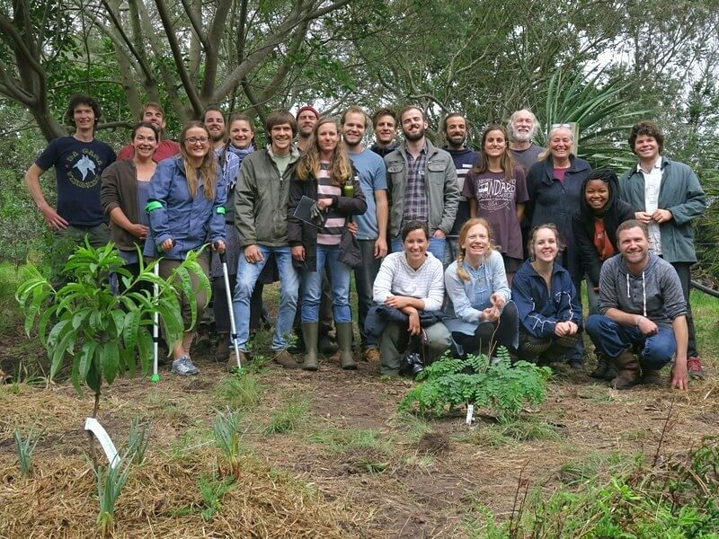

Most people who want to grow more food don't need another book — they need to stand in a real food forest, hands in the soil, and understand how the system actually works. This workshop was designed to bridge that gap: practical, site-specific, and focused on giving participants the skills and confidence to design and build their own productive landscape.
What the Workshop Covers
The day begins with a site reading session — participants learning to observe their land with different eyes. Aspect and sun angles, prevailing wind direction, water movement and ponding, soil texture and structure, existing vegetation as indicators. Before a single plant goes in the ground, understanding the site determines everything. The workshop spends time on this stage because it's the stage most people skip, and it's where most designs fail.
From site reading, the workshop moves into design principles — the 7-layer food forest model, guild planting logic (how companion plants support each other through nitrogen fixation, pest confusion, soil improvement, and physical structure), and the critical concept of designing for the system to manage itself over time. This isn't about creating more work — it's about creating a landscape that does the work for you once it's established.
Hands in the Ground
The practical session covers soil preparation, deep mulching techniques, compost preparation, and the correct way to establish fruit and nut trees to give them the best possible start. Participants work through the sheet mulching process — building living soil on top of whatever ground you have, without digging. It's one of the most transformative techniques in food forest establishment: compacted subsoil becomes productive garden bed in a single season.
Guild planting is demonstrated in situ — how to select and position companion plants around a newly planted fruit tree to create a self-managing planting guild, with each plant fulfilling a functional role. Participants leave the workshop with a guild design they've developed themselves, ready to implement at home.
"I came in thinking I needed to spend months planning before I could start. By the end of the workshop I'd already started — and I knew exactly what to do next."
What Participants Leave With
Every participant who takes part in the workshop leaves with more than theory. The workshop is structured so that by the end of the day, each participant has:
- Read and documented their own site using the site observation framework
- Designed a food forest layout appropriate for their land size and goals
- Learned the guild planting approach and selected species for their design
- Completed a sheet mulch bed and planted into it
- Understood the water management principles for their site type
- A written design document and species list to take home
Follow-up support is available for all workshop participants — if you hit a question when you get home and start implementing, you can reach out. The goal isn't just a great workshop day, it's a great food forest growing on your land.

